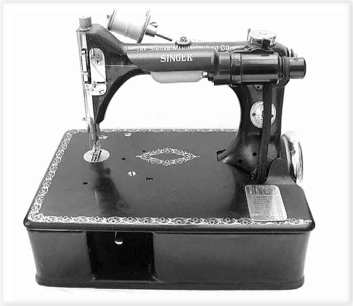
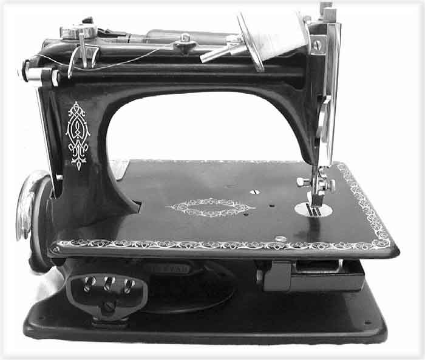
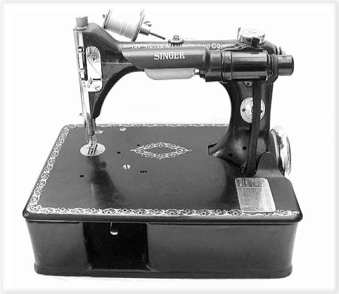
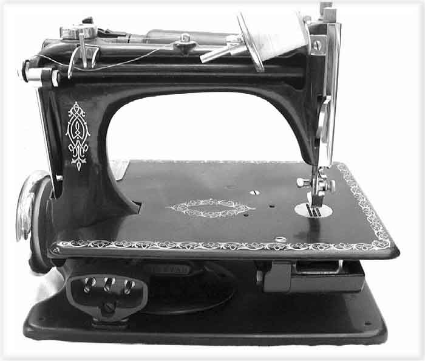

Singer Model 24
Model 24-80
Front View / Rear View
Front View

Rear View

© Alan Quinn
2003
This page may not be reproduced or distributed in part or in whole without the prior written permission of the copyright owner


This page may not be reproduced or distributed in part or in whole without the prior written permission of the copyright owner